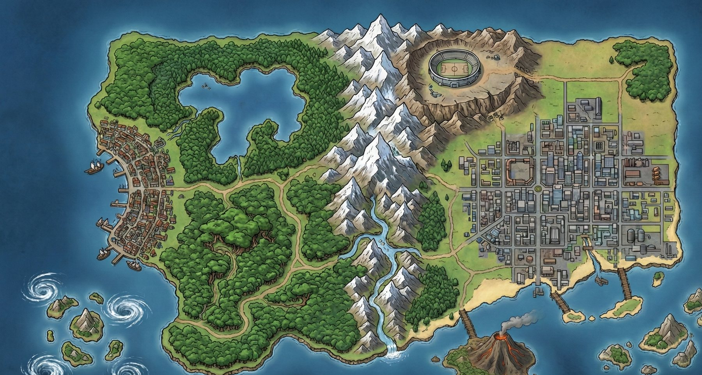

Carte de Kanto
Route 1 · Pokédex 24 / 151
2 badges : Roche, Cascade
Ton voyage
2 badges sur 8 · Route 1 en cours

Idée : Un tracé relie les zones et accompagne la progression.
Usage : touche une zone ou utilise la liste.
Point faible : Le chemin schématique peut sembler géographiquement exact.
Route 1 · Pokédex 24 / 151
2 badges : Roche, Cascade
2 badges sur 8 · Route 1 en cours
